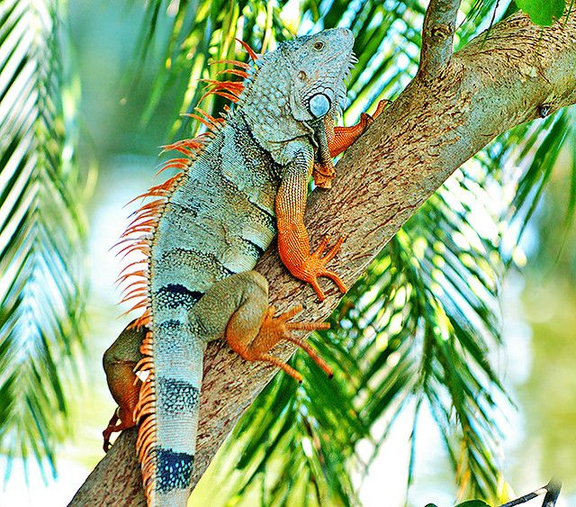
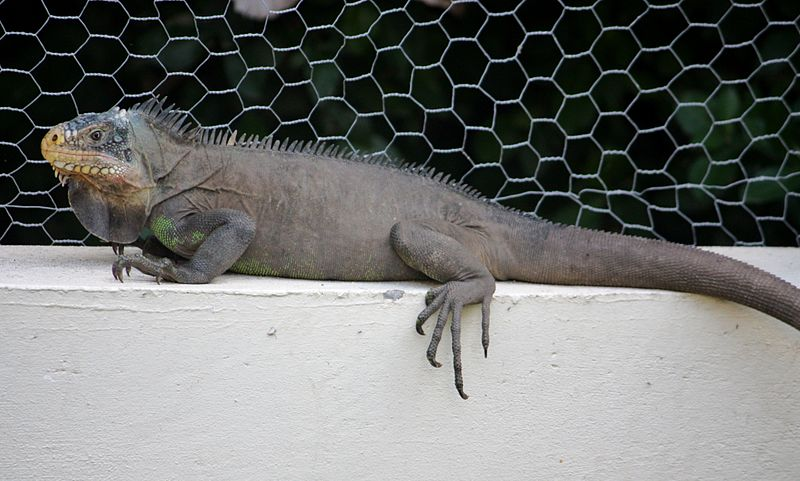
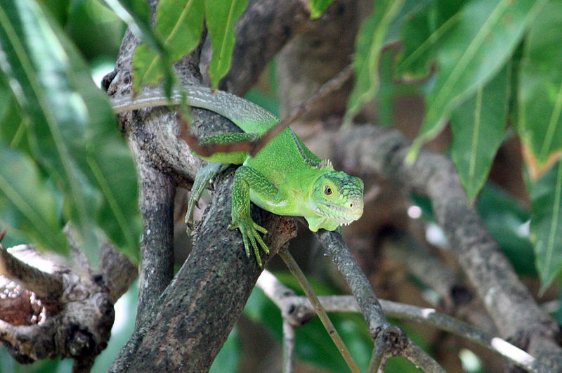
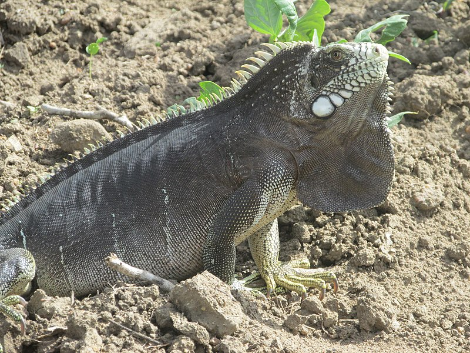
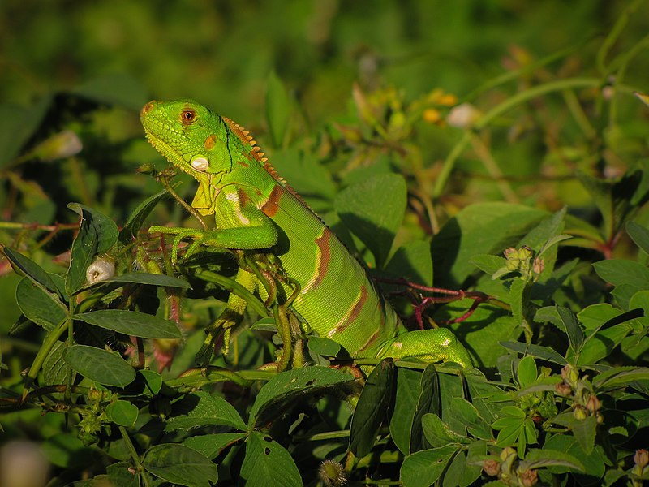

Indice
- Inicio
- Espécies
- Alimentação
- Pequena história sobre iguanas
- Iguana iguana
- Iguana delicatissima
|
Iguanas
Iguana é um gênero de réptil da família Iguanidae.
As espécies deste gênero ocorrem em regiões tropicais da América Central, América do Sul e Caribe.
As iguanas têm hábitos arborícolas, isto é, vivem em árvores, podendo atingir até 180 cm de comprimento.
Quando jovens, os iguanas possuem uma coloração verde intensa, já quando maiores, apresentam, ao longo do corpo, listras escuras.
A cauda de uma iguana possui dois terços do comprimento total do corpo.
Iguanas podem ser criados em terrário tropical úmido, por habitar florestas tropicais.
Espécies
A família Iguanidae possuí mais de 35 espécies.
Porém no gênero Iguana há apenas duas espécies:
Alimentação
Iguanas são totalmente herbívoros, geralmente se alimentam de folhas, flores e frutos das árvores em que habitam.
Em cativeiro deve-se tomar cuidado especial com a alimentação desse animal, considerando-se que é impossível replicar a dieta desta na natureza.
Uma boa dieta deve ter vegetais verdes, com folhas, o que inclui, beterraba, couve, alfafa, salsa, entre outras,
deve-se evitar verduras como alface, que, principalmente em excesso, fazem mal às iguanas.
Pequena história sobre iguanas
Era uma vez uma pequena ilha no meio do Oceano Pacífico, onde viviam diversas espécies de animais exóticos. Uma das criaturas mais fascinantes e enigmáticas que habitavam a ilha eram as iguanas.
As iguanas eram criaturas fascinantes, com sua pele escamosa e longas caudas. Elas passavam a maior parte do tempo se aquecendo ao sol, descansando em rochas ou árvores. Mas, quando a noite caía, elas se tornavam criaturas noturnas e começavam a explorar a ilha em busca de comida.
Um dia, um grupo de turistas desembarcou na ilha para observar as iguanas em seu habitat natural. Eles ficaram maravilhados ao ver as iguanas escalando árvores, procurando insetos em meio à vegetação rasteira e relaxando em pedras quentes à beira-mar.
No entanto, os turistas logo perceberam que a ilha estava enfrentando problemas ambientais. Muitos dos habitats naturais das iguanas estavam sendo destruídos, e a quantidade de alimentos disponíveis estava diminuindo. Os turistas decidiram fazer algo para ajudar as iguanas e a ilha em geral.
Eles trabalharam com biólogos locais para desenvolver um plano de conservação da ilha, que incluía a recuperação de habitats naturais, a remoção de espécies invasoras e a proteção das iguanas.
Com o tempo, a ilha começou a se recuperar, e as iguanas prosperaram. Os turistas continuaram a visitar a ilha, mas agora eles eram mais conscientes do impacto de suas ações no meio ambiente. Eles aprenderam a respeitar e proteger a ilha e seus habitantes, incluindo as adoráveis iguanas.
Iguana iguana
Iguana-verde (nome científico: Iguana iguana), popularmente conhecida como iguana-comum, iguano, sinimbu, "camaleão", cambaleão, senembi, senembu ou tijibu, é uma espécie de réptil da família Iguanidae.
Ocorre na América Central, Caribe e América do Sul, abrangendo grande parte do Brasil.
A iguana-verde é Arborícola e majoritariamente herbívora, podendo consumir proteína animal em algumas ocasiões.
Uma iguana-verde adulta pode medir 180 cm de comprimento e pesar 9 kg. Alimenta-se de frutas, folhas, ovos, insetos e pequenos vertebrados.
Possui uma crista que vai da nuca até a cauda, maior que o resto do corpo. Sua carne e ovos são comestíveis.
Sua garganta possui um saco dilatável.
As patas possuem cinco dedos com garras pontudas.
A cauda possui faixas transversais escuras.
O ovo da iguana-verde leva entre 10 a 15 semanas para chocar.
Iguana delicatissima
Iguana delicatissima é uma espécie de réptil da família Iguanidae.
Popularmente conhecida como iguana-do-caribe (português brasileiro) ou iguana-das-caraíbas (português europeu).
Ocorre em ilhas das Pequenas Antilhas como Anguilla, Bonaire, São Eustáquio, Saba, Dominica, Guadalupe, Martinica e São Bartolomeu.
|





|